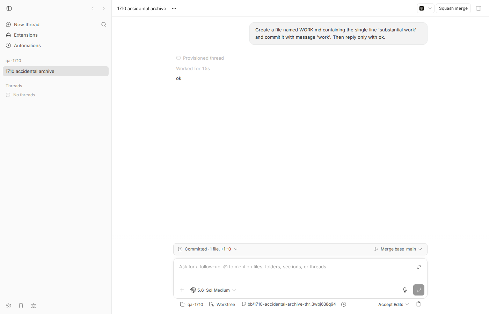
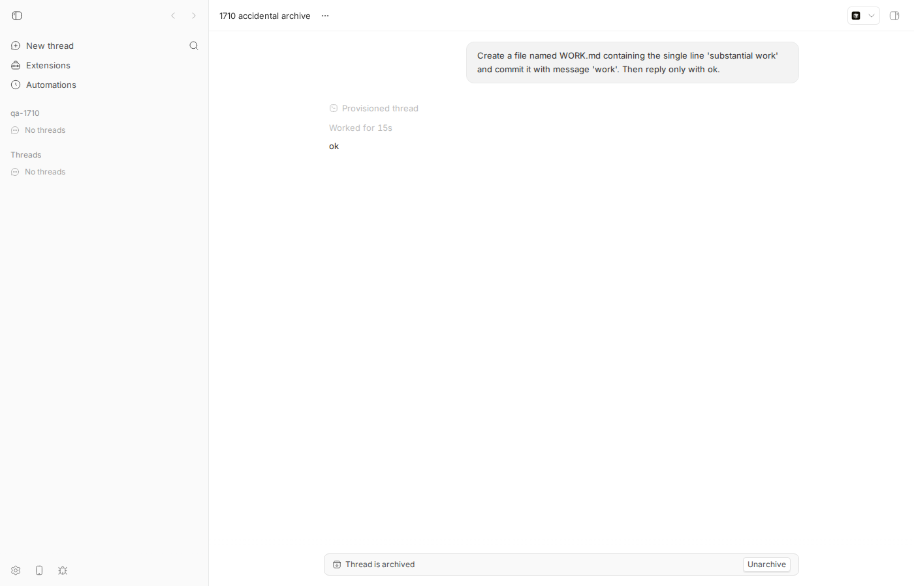
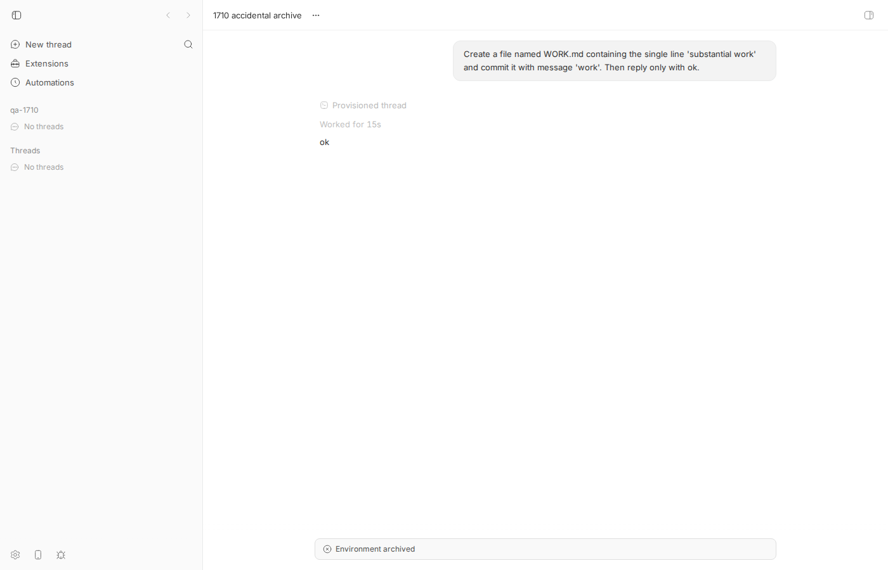
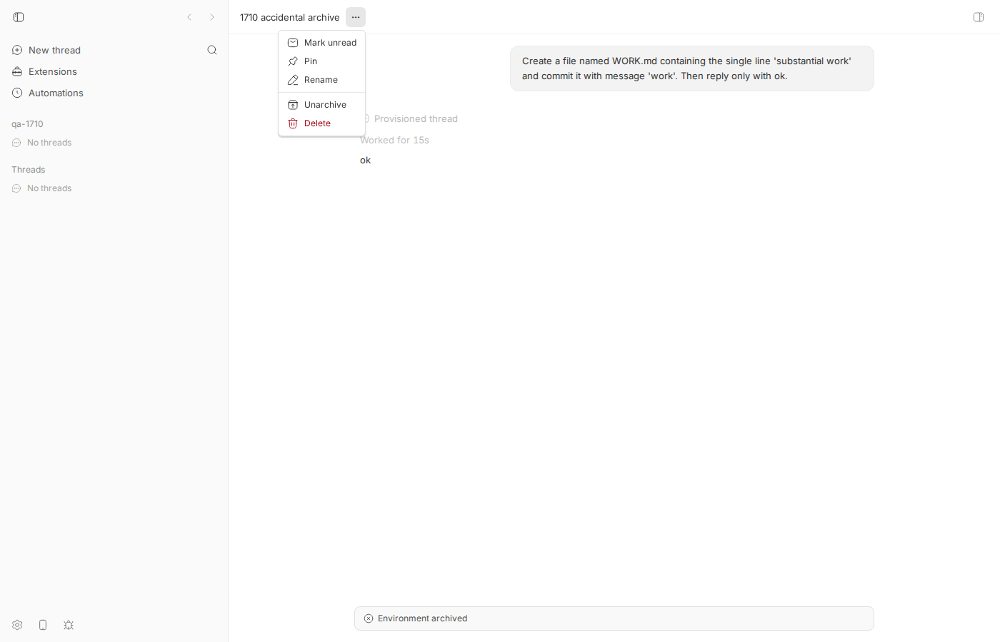
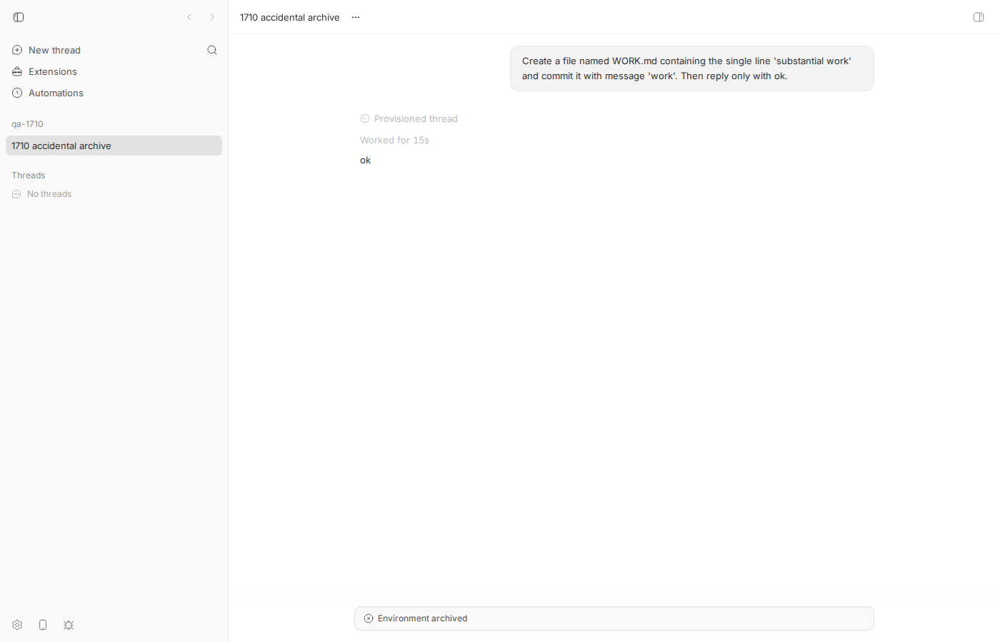

#1710 · Archived threads cannot resume in the original chat
TL;DR
Plain-language framing. A bb thread that runs in its own git worktree owns a "managed environment" (a checkout on disk plus a branch). When you archive the last live thread of such an environment, bb schedules the worktree for deletion. Since PR #1016 (v0.37.0, 2026-08-12) there is a 5-minute grace window during which Unarchive (or the 10-second toast Undo) restores everything losslessly. When the window elapses the host daemon runs git worktree remove --force, the environment row becomes destroyed (a terminal state; the branch itself survives in the main repo, uncommitted changes do not), and the thread page replaces the composer with the banner "Environment archived".
I reproduced the reporter's state end to end on a real instance: archive a worktree thread, wait 5 min + one 10 s sweep tick, and the thread shows Environment archived with no button at all. What is actually wrong is that from that state every path back into the conversation is closed: the in-thread banner deliberately hides Unarchive once the environment is gone; the "..." menu / archived-threads settings still offer Unarchive, and it returns 200, but it only clears archivedAt and the thread becomes a live-but-dead thread (composer hidden, send → 409 thread_environment_unavailable, CLI bb thread tell → HTTP 409); fork is rejected (Source thread must have a ready environment to fork); the "Handoff to new thread" action lives inside the hidden composer; and no route/CLI command can attach a fresh workspace to an existing thread. PR #1016 explicitly deferred a "Continue in new thread" action for destroyed environments and never shipped it. Root cause is therefore a design gap rather than a crash: destroyed is terminal for the thread as well as for the environment, and no re-provisioning path exists although all the ingredients (surviving branch name on the environment row, updateThread({environmentId}), and resolveForkEnvironment which already builds a new worktree from a source branch) are in the codebase.
Claims vs findings
| Claim | Status | Evidence |
|---|---|---|
Accidentally archived thread then shows Environment archived | Verified | Reproduced 5 min 6 s after archiving a worktree thread (screenshot 3, poll log). Before v0.37.0 the destroy was immediate (PR #1016 description); after it, only after the grace window. |
| User cannot continue the original chat | Verified | Composer hidden (shouldHideComposer), POST /threads/:id/send → 409 thread_environment_unavailable, bb thread tell → HTTP 409, fork → 400. Transcript 1710-unarchive-after-destroy.out. |
| "No direct recovery path in that conversation" | Verified | Banner hides the Unarchive action when environmentGoneSection is set (screenshot 3); the "..." menu Unarchive succeeds but produces a thread that is unarchived and still unwritable (screenshots 4-5). |
| Expected: unarchive/recover and continue without losing context | Not implemented | The route comment says the user "can hand its context and surviving branch off to a new thread instead", but the handoff action is inside the hidden composer and fork is blocked; PR #1016 deferred the destroyed-environment "Continue in new thread" action. |
| Substantial work is lost | Partially | Committed work survives on the branch (bb/1710-accidental-archive-thr_3wbj638q94 still at 716a568 work after destroy); uncommitted changes are deleted by git worktree remove --force. Conversation context (events, provider session) is retained in bb's data dir, but is unreachable for continuation. |
| Recovery inside the grace window works | Verified (control) | Archive → unarchive a few seconds later → environment retiring → ready, follow-up answered (control transcript). The UI gives no hint that a 5-minute deadline exists. |
Environment
- bb
16ceb3a54(main, 2026-08-18), worktree/home/USER/projects/bb/.claude/worktrees/wf_242c3e11-a10-10; dev instance app:12728, server:20728, host daemon:28728, data dir/home/USER/.bb-dev/projects-bb-.claude-worktrees-wf_242c3e11-a10-10-fe38788052a6. - Linux 7.0.0-29-generic, node v24.18.0, provider
codex(codex-cli 0.147.0, model gpt-5.6-sol), hosthost_58mkech586. - Project
proj_kwhvshvxma(local path/tmp/1710-qa, a scratch git repo). Threads:thr_3wbj638q94(repro, envenv_r4czunz9nt),thr_754fzrrkut(control). - CLI wrapper used below:
1710/repro/1710-bb.sh(BB_REPO=<your bb worktree>; it evaluatesscripts/bb-dev-app envand runspackages/scripts/dist/commands/run-cli.js).bbbelow means this wrapper. Origin/main at report time (a108fa7ef) contains no change to the involved files (checked withgit log 16ceb3a54..origin/main -- …).
Minimal reproduction
- Build and start your dev instance:
pnpm install --frozen-lockfile --prefer-offline && pnpm exec turbo run build && scripts/bb-dev-app current.export BB_REPO=/abs/path/to/bb/worktree. - Create a scratch repo and a project on it:
mkdir /tmp/1710-qa && cd /tmp/1710-qa && git init -q -b main && echo "# qa" > README.md && git add . && git commit -qm init eval "$(scripts/bb-dev-app env)" bb machine list # note the host id curl -s -X POST $BB_SERVER_URL/api/v1/projects -H 'content-type: application/json' \ -d '{"name":"qa-1710","source":{"type":"local_path","path":"/tmp/1710-qa","hostId":"<host id>"}}' # → proj_… - Spawn a thread in a new worktree and let it do some work:
bb thread spawn --project proj_kwhvshvxma --new-environment worktree --provider codex --permission-mode accept-edits \ --title "1710 accidental archive" --prompt "Create a file named WORK.md containing the single line 'substantial work' and commit it with message 'work'. Then reply only with ok." --json bb thread wait thr_3wbj638q94 --timeout 180 # Thread thr_3wbj638q94 reached status idle. bb thread show thr_3wbj638q94 --json | jq '.environment | {id,status,path,branchName}' # "env_r4czunz9nt", "ready", ".../worktrees/env_r4czunz9nt/1710-qa", "bb/1710-accidental-archive-thr_3wbj638q94"
1. Before: the worktree thread is idle, the composer is available, the banner shows the committed change ( Committed · 1 file, +1 -0) and branchbb/1710-accidental-archive-thr_3wbj638q94. - Archive it (this is the "accident"; the "..." menu → Archive in the app does the same thing) and observe the environment enter the grace window:
$ bb thread archive thr_3wbj638q94 Thread thr_3wbj638q94 archived $ sqlite3 <data dir>/bb.db "select status,retire_requested_at,path from environments where id='env_r4czunz9nt';" retiring|1787037567625|/home/USER/.bb-dev/.../worktrees/env_r4czunz9nt/1710-qa

2. Inside the 5-minute grace window the banner says Thread is archived and offers Unarchive (lossless, see control below). Nothing tells the user that this offer expires in 5 minutes. - Do nothing for 5 minutes (a poller:
1710-env-status-poll.log). The periodic sweep (every 10 s) destroys the worktree oncenow - retireRequestedAt ≥ 5 min:07:20:15 retiring|/home/USER/.bb-dev/projects-bb-.claude-worktrees-wf_242c3e11-a10-10-fe38788052a6/worktrees/env_r4czunz9nt/1710-qa 07:20:30 retiring|/home/USER/.bb-dev/projects-bb-.claude-worktrees-wf_242c3e11-a10-10-fe38788052a6/worktrees/env_r4czunz9nt/1710-qa 07:20:45 retiring|/home/USER/.bb-dev/projects-bb-.claude-worktrees-wf_242c3e11-a10-10-fe38788052a6/worktrees/env_r4czunz9nt/1710-qa 07:21:00 retiring|/home/USER/.bb-dev/projects-bb-.claude-worktrees-wf_242c3e11-a10-10-fe38788052a6/worktrees/env_r4czunz9nt/1710-qa 07:21:15 retiring|/home/USER/.bb-dev/projects-bb-.claude-worktrees-wf_242c3e11-a10-10-fe38788052a6/worktrees/env_r4czunz9nt/1710-qa 07:21:30 retiring|/home/USER/.bb-dev/projects-bb-.claude-worktrees-wf_242c3e11-a10-10-fe38788052a6/worktrees/env_r4czunz9nt/1710-qa 07:21:45 retiring|/home/USER/.bb-dev/projects-bb-.claude-worktrees-wf_242c3e11-a10-10-fe38788052a6/worktrees/env_r4czunz9nt/1710-qa 07:22:01 retiring|/home/USER/.bb-dev/projects-bb-.claude-worktrees-wf_242c3e11-a10-10-fe38788052a6/worktrees/env_r4czunz9nt/1710-qa 07:22:16 retiring|/home/USER/.bb-dev/projects-bb-.claude-worktrees-wf_242c3e11-a10-10-fe38788052a6/worktrees/env_r4czunz9nt/1710-qa 07:22:31 retiring|/home/USER/.bb-dev/projects-bb-.claude-worktrees-wf_242c3e11-a10-10-fe38788052a6/worktrees/env_r4czunz9nt/1710-qa 07:22:46 retiring|/home/USER/.bb-dev/projects-bb-.claude-worktrees-wf_242c3e11-a10-10-fe38788052a6/worktrees/env_r4czunz9nt/1710-qa 07:23:01 retiring|/home/USER/.bb-dev/projects-bb-.claude-worktrees-wf_242c3e11-a10-10-fe38788052a6/worktrees/env_r4czunz9nt/1710-qa 07:23:16 retiring|/home/USER/.bb-dev/projects-bb-.claude-worktrees-wf_242c3e11-a10-10-fe38788052a6/worktrees/env_r4czunz9nt/1710-qa 07:23:31 retiring|/home/USER/.bb-dev/projects-bb-.claude-worktrees-wf_242c3e11-a10-10-fe38788052a6/worktrees/env_r4czunz9nt/1710-qa 07:23:46 retiring|/home/USER/.bb-dev/projects-bb-.claude-worktrees-wf_242c3e11-a10-10-fe38788052a6/worktrees/env_r4czunz9nt/1710-qa 07:24:01 retiring|/home/USER/.bb-dev/projects-bb-.claude-worktrees-wf_242c3e11-a10-10-fe38788052a6/worktrees/env_r4czunz9nt/1710-qa 07:24:16 retiring|/home/USER/.bb-dev/projects-bb-.claude-worktrees-wf_242c3e11-a10-10-fe38788052a6/worktrees/env_r4czunz9nt/1710-qa 07:24:31 retiring|/home/USER/.bb-dev/projects-bb-.claude-worktrees-wf_242c3e11-a10-10-fe38788052a6/worktrees/env_r4czunz9nt/1710-qa 07:24:46 destroyed|NULL

3. The reported state. The banner now says Environment archived, there is no Unarchive button, no composer, no "continue" action. Info panel: "Workspace no longer exists." - Try every recovery path the product exposes (script
1710-unarchive-after-destroy.sh, output.out):$ bb thread show thr_3wbj638q94 --json | jq '{archivedAt,status,env,path}' { "archivedAt": 1787037567622, "status": "idle", "env": "destroyed", "path": null } $ bb thread unarchive thr_3wbj638q94 Thread thr_3wbj638q94 unarchived exit=0 $ bb thread show thr_3wbj638q94 --json | jq '{archivedAt,status,env,path}' { "archivedAt": null, "status": "idle", "env": "destroyed", "path": null } $ bb thread tell thr_3wbj638q94 'Reply only with ok.' Error: HTTP 409: Thread environment is unavailable exit=1 $ curl -X POST $BB_SERVER_URL/api/v1/threads/thr_3wbj638q94/send (raw server response) {"code":"thread_environment_unavailable","message":"Thread environment is unavailable","details":{"reason":"destroyed","environmentStatus":"destroyed"}}Expected (issue): the user can unarchive/recover the thread and continue the conversation. Actual:
unarchivereturns success and clearsarchivedAt, but the thread stays read-only forever; every send returns409 thread_environment_unavailable. Fork is rejected too:$ bb thread fork thr_3wbj638q94 --workspace isolated --prompt "Reply only with ok." --json Error: Failed to fork thread thr_3wbj638q94: HTTP 400: Source thread must have a ready environment to fork

4. The thread's "..." menu (and Settings → Archived threads) still offers Unarchive for the archived thread… 
5. …and after clicking it the thread is back in the sidebar as a live thread but still shows Environment archived with no composer: a zombie thread. The environment row is terminal ( status: destroyed, path: null) while itsbranchNameis still recorded and the branch still exists in/tmp/1710-qa(716a568 work).
Control: recovery inside the grace window is lossless
Script 1710-control-grace-unarchive.sh, output .out. This is what the reporter would have gotten had they noticed within 5 minutes:
thread=thr_754fzrrkut Thread thr_754fzrrkut reached status idle. $ bb thread archive thr_754fzrrkut Thread thr_754fzrrkut archived env status after archive: retiring $ bb thread unarchive thr_754fzrrkut (a few seconds later, inside the grace window) Thread thr_754fzrrkut unarchived env status after unarchive: ready $ bb thread tell thr_754fzrrkut 'Reply only with ok again.' Thread thr_754fzrrkut steered exit=0 Thread thr_754fzrrkut reached status idle. ── User ──────────────────────────────────────────────────── Reply only with ok again. ── Assistant ─────────────────────────────────────────────── ok
Unit-level repro (server harness, in-memory SQLite)
File: 1710/repro/issue-1710-archived-thread-dead-end.test.ts (copy to apps/server/test/public/; run cd apps/server && pnpm exec vitest run test/public/issue-1710-archived-thread-dead-end.test.ts). It passes on main: it documents the dead end, walking the exact production code path (archive route → retiring → grace-gated sweep → destroy.started → daemon success → destroyed → unarchive 200 → send 409). If a fix lands, the last assertion (send → 409) is the one that should flip.
import { eq } from "drizzle-orm";
import {
archiveThread,
createEnvironment,
createThread,
environments,
getEnvironment,
getThread,
} from "@bb/db";
import { describe, expect, it } from "vitest";
import { MANAGED_ENVIRONMENT_RETIRE_GRACE_MS } from "../../src/constants.js";
import { settleEnvironmentDestroyCommandResult } from "../../src/services/environments/environment-cleanup-internal.js";
import { runManagedEnvironmentArchiveCleanupRecoverySweep } from "../../src/services/system/periodic-sweeps.js";
import { listQueuedEnvironmentCommands } from "../helpers/commands.js";
import { readJson } from "../helpers/json.js";
import { seedHostSession, seedProjectWithSource } from "../helpers/seed.js";
import { withTestHarness } from "../helpers/test-app.js";
const SWEEP_START_MS = 4_000_000_000_000;
/**
* Issue #1710: a thread archived by accident becomes unrecoverable once its
* managed worktree's 5-minute grace window elapses. This test PASSES on main:
* it documents the dead end, not a crash. After the destroy settles the
* environment is `destroyed` (terminal), `unarchive` returns 200 but the
* thread stays read-only (send -> 409 thread_environment_unavailable) and
* nothing in the API can re-provision a workspace for the thread.
*/
describe("issue #1710: archived thread cannot resume after grace expiry", () => {
it("unarchive succeeds but the thread is permanently unwritable once its environment was destroyed", async () => {
await withTestHarness(async (harness) => {
const { host } = seedHostSession(harness.deps);
const { project } = seedProjectWithSource(harness.deps, {
hostId: host.id,
});
const environment = createEnvironment(harness.db, harness.hub, {
hostId: host.id,
isGitRepo: true,
managed: true,
path: "/tmp/issue-1710-worktree",
projectId: project.id,
status: "ready",
workspaceProvisionType: "managed-worktree",
});
const thread = createThread(harness.db, harness.hub, {
projectId: project.id,
environmentId: environment.id,
providerId: "codex",
status: "idle",
});
// 1. Archive the only live thread of the managed worktree -> the
// environment enters `retiring` (5-minute grace window).
const archiveResponse = await harness.app.request(
`/api/v1/threads/${thread.id}/archive`,
{ method: "POST" },
);
expect(archiveResponse.status).toBe(200);
expect(getThread(harness.db, thread.id)?.archivedAt).not.toBeNull();
expect(getEnvironment(harness.db, environment.id)?.status).toBe(
"retiring",
);
// 2. Inside the grace window unarchive is lossless: retire.cancelled.
// (Control: this is what the user gets if they notice within 5 min.)
await runManagedEnvironmentArchiveCleanupRecoverySweep(
harness.deps,
SWEEP_START_MS,
);
expect(getEnvironment(harness.db, environment.id)?.status).toBe(
"retiring",
);
// 3. The user does not notice for > 5 minutes. Simulate the elapsed
// grace window exactly the way the periodic sweep sees it.
archiveThread(harness.db, harness.hub, thread.id);
harness.db
.update(environments)
.set({
retireRequestedAt:
Date.now() - MANAGED_ENVIRONMENT_RETIRE_GRACE_MS - 1,
})
.where(eq(environments.id, environment.id))
.run();
await runManagedEnvironmentArchiveCleanupRecoverySweep(
harness.deps,
SWEEP_START_MS + 1,
);
expect(getEnvironment(harness.db, environment.id)?.status).toBe(
"destroying",
);
const destroyCommands = listQueuedEnvironmentCommands(
harness,
"environment.destroy",
environment.id,
);
expect(destroyCommands).toHaveLength(1);
// 4. The host daemon reports the worktree removed -> `destroyed`
// (terminal state, path cleared).
const destroyAttemptId = getEnvironment(harness.db, environment.id)
?.destroyAttemptId;
expect(destroyAttemptId).toBeTruthy();
harness.db.transaction((tx) => {
settleEnvironmentDestroyCommandResult({
command: {
type: "environment.destroy",
environmentId: environment.id,
workspaceContext: {
workspacePath: "/tmp/issue-1710-worktree",
workspaceProvisionType: "managed-worktree",
},
},
deps: { ...harness.deps, db: tx, hub: harness.hub },
execution: {
createdAt: Date.now(),
hostId: host.id,
id: destroyAttemptId!,
},
report: { ok: true, result: {} },
});
});
expect(getEnvironment(harness.db, environment.id)).toMatchObject({
status: "destroyed",
path: null,
});
// 5. The user finds the thread and clicks Unarchive (sidebar menu /
// settings > archived threads; the in-thread banner hides the button).
const unarchiveResponse = await harness.app.request(
`/api/v1/threads/${thread.id}/unarchive`,
{ method: "POST" },
);
expect(unarchiveResponse.status).toBe(200);
expect(getThread(harness.db, thread.id)?.archivedAt).toBeNull();
// The environment is not revived: `retire.cancelled` is illegal from
// `destroyed`, and nothing re-provisions.
expect(getEnvironment(harness.db, environment.id)?.status).toBe(
"destroyed",
);
// 6. The thread is now live-but-dead: every attempt to continue the
// conversation is rejected, and there is no route that would attach a
// fresh workspace. This is the "cannot continue the original chat"
// state from the issue.
const sendResponse = await harness.app.request(
`/api/v1/threads/${thread.id}/send`,
{
method: "POST",
headers: { "content-type": "application/json" },
body: JSON.stringify({
mode: "auto",
input: [{ type: "text", text: "Reply only with ok." }],
}),
},
);
expect(sendResponse.status).toBe(409);
expect(await readJson(sendResponse)).toMatchObject({
code: "thread_environment_unavailable",
details: { reason: "destroyed", environmentStatus: "destroyed" },
});
});
});
});
$ cd apps/server && pnpm exec vitest run test/public/issue-1710-archived-thread-dead-end.test.ts
Test Files 1 passed (1)
Tests 1 passed (1)
Root cause
1. Archiving the last live thread of a managed worktree retires the environment; after the grace window it is destroyed. The archive route computes wouldCleanupEnvironment (managed and zero other live threads, environment-cleanup-internal.ts#L286-L303) and, if true, applies retire.requested (actions.ts#L672-L698). The 10-second periodic sweep (periodic-sweeps.ts#L376-L398) calls advanceEnvironmentCleanup, which waits only while now - retireRequestedAt < managedEnvironmentRetireGraceMs (MANAGED_ENVIRONMENT_RETIRE_GRACE_MS = 5 * 60_000, constants.ts#L15) and a revivable archived thread exists (environment-cleanup-internal.ts#L402-L424), then dispatches environment.destroy. The daemon runs git worktree remove <path> --force (provisioning.ts#L713-L753): the checkout and any uncommitted changes are deleted, the branch survives. On success the row goes to destroyed with path = null; the branch name stays on the row (see env JSON).
{"id":"env_r4czunz9nt","name":null,"projectId":"proj_kwhvshvxma","hostId":"host_58mkech586","path":null,"managed":true,"isGitRepo":true,"isWorktree":true,"branchName":"bb/1710-accidental-archive-thr_3wbj638q94","baseBranch":null,"defaultBranch":"main","mergeBaseBranch":null,"destroyAttemptId":null,"retireRequestedAt":null,"workspaceProvisionType":"managed-worktree","status":"destroyed","createdAt":1787037393448,"updatedAt":1787037873054}
2. destroyed is terminal for the thread too ("Decision B*"). requireThreadCommandEnvironment rejects any work request when the environment is destroying/destroyed with 409 thread_environment_unavailable and never re-provisions (thread-command-environment.ts#L43-L62, lifecycle-api-errors.ts#L74-L98). The unarchive route is a pure record op: it emits retire.cancelled only if the environment is still retiring; from destroyed it does nothing and its own comment says the thread "remains read-only" (actions.ts#L717-L745). Fork requires a ready environment with a path (thread-fork.ts#L48-L63). No route or CLI command can attach a new environment to an existing thread (updateThreadRequestSchema has no environmentId; the bb environment command set has no restore/reprovision).
3. The UI removes every affordance in that state. ThreadDetailView derives threadEnvironmentGoneStatus from the environment status (ThreadDetailView.tsx#L2489-L2495); ThreadDetailPromptArea hides the composer (and with it the footer action "Handoff to new thread", ThreadDetailPromptArea.tsx#L628-L629, ThreadDetailPromptArea.tsx#L1078-L1081); and the banner renders the read-only row with the Unarchive action only when the environment is not gone (ThreadPromptContextBanner.tsx#L907-L931):
statusAction={
archivedSection?.onUnarchive && !environmentGone ? (
<ThreadUnarchiveTextAction … />
) : null
}
Hiding the button is deliberate (unarchive would only make a zombie), but nothing replaces it. PR #1016 states: "There is no destroyed-environment Continue in new thread action in this PR; that workflow will be handled separately." It was not handled: nothing on main or origin/main adds it. Meanwhile the "..." menu and Settings → Archived threads still expose Unarchive, which yields the live-but-dead thread in screenshot 5.
Why the symptom follows. The reporter archived, did not notice within 5 minutes (or was on ≤ v0.36.0 where destroy was immediate), the worktree was removed, and every remaining control path is either hidden or rejects with 409/400. Conversation history and the provider session are still stored, and the branch still exists, so the context is recoverable in principle; the product just has no operation that does it.
Deeper issues. (a) The 5-minute deadline is invisible: the "Thread is archived" banner and the archived-threads list do not show that the worktree will be deleted, and the archive toast disappears after 10 s. (b) The wording Environment archived is misleading — nothing was archived, the workspace was deleted. (c) Unarchive on a destroyed-environment thread should either be refused with a clear message or perform a recovery; today it silently produces an unusable live thread. (d) The Handoff to new thread location state carries reuseEnvironmentId even for a destroyed environment (thread-handoff-request.ts#L20-L30); if that action were simply re-exposed it would try to reuse a destroyed environment.
Proposed fix (first principles)
Two layers; both are needed for "continue in the original chat".
- Server: a re-provision path for a thread whose managed environment is
destroyed. AddPOST /threads/:id/restore-environment(and call it from the unarchive route when the environment is destroyed, or keep unarchive pure and let the UI call it explicitly). Preconditions: thread not deleted, environmentmanaged+workspaceProvisionType = managed-worktree+status = destroyed. Behavior: create a new managed-worktree environment on the same host withbaseBranch = {kind:"named", name: oldEnvironment.branchName}when the branch still exists (else default base) — exactly whatresolveForkEnvironmentalready computes (thread-fork.ts#L66-L94) — thenupdateThread(tx, hub, threadId, {environmentId: newEnvironment.id})(supported by the DB layer, emitsenvironment-changed) and let the normal thread provisioning create the worktree. Leave the old rowdestroyed. Provider resume: the stored provider session/rollout is cwd-independent for codex; verifydispatchThreadUnarchiveCommand/session resume tolerate a changed workspace path, and fall back to a fresh session seeded from the thread's history (as fork does) if resume fails. BumpHOST_DAEMON_PROTOCOL_VERSIONonly if any daemon command shape changes (none should). - App/CLI/SDK: in the environment-gone banner replace the empty right slot with Restore workspace from branch <branch> (calls the new route) and Continue in new thread (existing handoff, but with
reuseEnvironmentIdomitted when the environment is gone). Show the same in the "..." menu instead of a bare Unarchive for destroyed-environment threads. Addbb thread restore-environment <id>/sdk.threads.restoreEnvironment. Also show the deadline in the archived banner ("worktree is deleted in 4:32") and rename Environment archived to Workspace deleted. - Cheap intermediate step if the full restore is too big: relax
requireSourceEnvironmentso fork is allowed from adestroyedenvironment whenbranchNameis set (isolated mode only; reuse must stay rejected), and expose "Continue in new thread (fork)" in the gone banner. That already gives context + branch continuity in a new thread.
What could go wrong: the branch may have been deleted or merged (fall back to default base and say so); the project's source repo may be gone (fail with the existing provisioning error); uncommitted work is unrecoverable no matter what — the restore UI must say "committed work on branch X is restored; uncommitted changes were lost"; plugins that keyed on the old environmentId see a new id (the environment-changed notification exists for this); the destroyed row is pruned after 7 days, so branchName should be captured before pruning or the thread should store it.
Related issues
- PR #1016 "feat(environments): add a lossless archive grace period" (merged 2026-08-11, first in desktop-v0.37.0) — introduced the 5-minute window and the Environment archived banner; explicitly deferred the destroyed-environment "Continue in new thread" action.
- #1624 "Support discovered worktrees and continuing existing branches" — a generic "start a thread on an existing branch" would be the building block for restoring from the surviving branch.
- #1660 mentions orphaned processes in deleted managed worktrees (same destroy path, different symptom).
Appendix
Timing
retire_requested_at = 1787037567625 (07:19:27.625Z) → destroy.completed at updated_at = 1787037873054 (07:24:33.054Z): 305.4 s = 5 min grace + one 10 s sweep tick. Server/daemon logs contain no line about the retire/destroy (note).
Artifacts
1710-spawn.out— spawn JSON1710-thread-log.txt—bb thread logof the repro thread1710-env-status-poll.log— environment status every 15 s during the grace window1710-env-after-destroy.json,1710-env-row-after.txt,1710-thread-row-after.txt1710-unarchive-after-destroy.sh/.out,1710-fork-after-destroy.out1710-control-grace-unarchive.sh/.outissue-1710-archived-thread-dead-end.test.ts/1710-unit-test.outbuild-report.py— generator for this page
Commands run (chronological)
git checkout 16ceb3a54 && pnpm install --frozen-lockfile --prefer-offline && pnpm exec turbo run build scripts/bb-dev-app current mkdir /tmp/1710-qa; git init -b main; commit README.md bb machine list # host_58mkech586 curl -X POST $BB_SERVER_URL/api/v1/projects … /tmp/1710-qa # proj_kwhvshvxma bb thread spawn --project proj_kwhvshvxma --new-environment worktree --provider codex --permission-mode accept-edits --title "1710 accidental archive" --prompt "…commit WORK.md…" --json # thr_3wbj638q94 / env_r4czunz9nt bb thread wait thr_3wbj638q94 --timeout 180 dev-browser (headless) screenshot → assets/1710-before.png bb thread archive thr_3wbj638q94 # 07:19:27Z sqlite3 bb.db "select status,retire_requested_at,path from environments where id='env_r4czunz9nt'" # retiring dev-browser screenshot → assets/1710-archived-grace.png poll sqlite every 15 s → 1710-env-status-poll.log # destroyed at 07:24:33Z dev-browser screenshot → assets/1710-env-archived-no-recovery.png git -C /tmp/1710-qa branch -a; git log bb/1710-accidental-archive-thr_3wbj638q94 # branch survives, 716a568 work 1710-unarchive-after-destroy.sh thr_3wbj638q94 # unarchive 200, tell 409, send 409 bb thread fork thr_3wbj638q94 --workspace isolated … # 400 bb thread archive thr_3wbj638q94; dev-browser screenshot of "..." menu → assets/1710-actions-menu-unarchive.png dev-browser screenshot after unarchive → assets/1710-unarchived-still-dead.png 1710-control-grace-unarchive.sh proj_kwhvshvxma # thr_754fzrrkut, lossless cd apps/server && pnpm exec vitest run test/public/issue-1710-archived-thread-dead-end.test.ts pnpm dev:stop